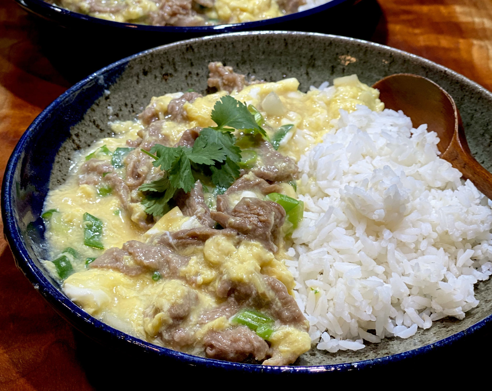

Dawg Bowl

Description
This will pack the protein into your frail body. The God's themselves couldn't think of a
more nutritious dish.
Ingredients
- 1lb 90/10 grass fed ground beef [92g protein]
- 4 servings of egg whites (46g per serving) [20g protein]
- 200g steamed white rice (carbs for fuel)
- 100g vanilla flavored greek yogurt(use one with 0% fat) [17g protein]
Instructions
- Place ground beef in a 12 inch pan and press down to spread it evenly
- Season your beef generously. You can't go wrong with salt, pepper, and garlic powder. I personally
use a box of spices that's called "Carne Asada Seasoning"
- I honestly don't know how long I wait until I flip it I just feel it out. Maybe
5ish minutes? Once flipped, season the other side generously.
- Wait for a 2-3 minutes and add in your egg whites constantly stir the eggwhites with
the beef so they mix well.
- Once your egg whites are cooked pretty well add in your rice and greek yogurt
- You can check to make sure the beef reaches 145 with a thermometer and
then you're done
- Enjoy
Home